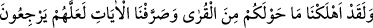
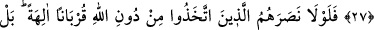
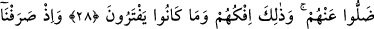
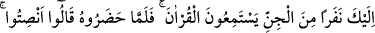
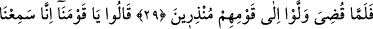
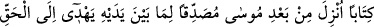
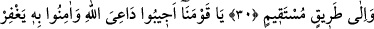
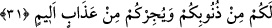

EY KAVMİMİZ!
ALLAH’IN DÂVETÇİSİNE UYUN!
27. Andolsun biz, çevrenizdeki memleketleri de yok ettik. Belki doğru yola
dönerler diye âyetleri tekrar tekrar açıkladık.
28. Allah’tan başka kendilerine yakınlık sağlamak için tanrı edindikleri şeyler,
kendilerine yardım etselerdi ya! Hayır, onları bırakıp gittiler. Bu onların yalanı ve
uydurup durdukları şeydir.
29. Hani cinlerden bir gurubu, Kur’ân’ı dinlemeleri için sana yöneltmiştik.
Kur’ân’ı dinlemeye hazır olunca (birbirlerine) «Susun» demişler, Kur’ân’ın
okunması bitince uyarıcılar olarak kavimlerine dönmüşlerdi.
30. Ey kavmimiz! dediler, doğrusu biz Mûsâ’dan sonra indirilen, kendinden
öncekini doğrulayan, hakka ve doğru yola ileten bir kitap dinledik.
31. Ey kavmimiz! Allah’ın dâvetçisine uyun. Ona îmân edin ki Allah da sizin
günahlarınızı kısmen bağışlasın ve sizi acı bir azaptan korusun.
Ey Mekkeliler “Andolsun, biz çevrenizdeki kentleri”, Semûd kavmine âid Hicr
bölgesi gibi yerleri ve harab olmuş kentleri -ki bunlar Lût kavminin kentleridir- “de yok
ettik ve belki (küfürlerinden)” ve içinde bulundukları mâsiyetlerden “dönerler diye
âyetleri”, ibret alacakları delilleri ve çeşitli ibret sahnelerini “tekrar tekrar
açıkladık.” Çünkü bu âyetler, tevhid ve tâate dönüş sebepleridir. Ancak onlardan hiç
biri tevhide dönmemiştir. Şu bilinmelidir ki hidâyet Allah’ın kudret elinde olup, onu
dilediğine verir.
Ey Mekkeliler! “Andolsun biz, çevrenizdeki kentleri de yok ettik.” Doğrusu sizin
etrafınızda olan her şeyi yok ettik. Bir şeyin çevresi, o şeyin aslına ve merkezine